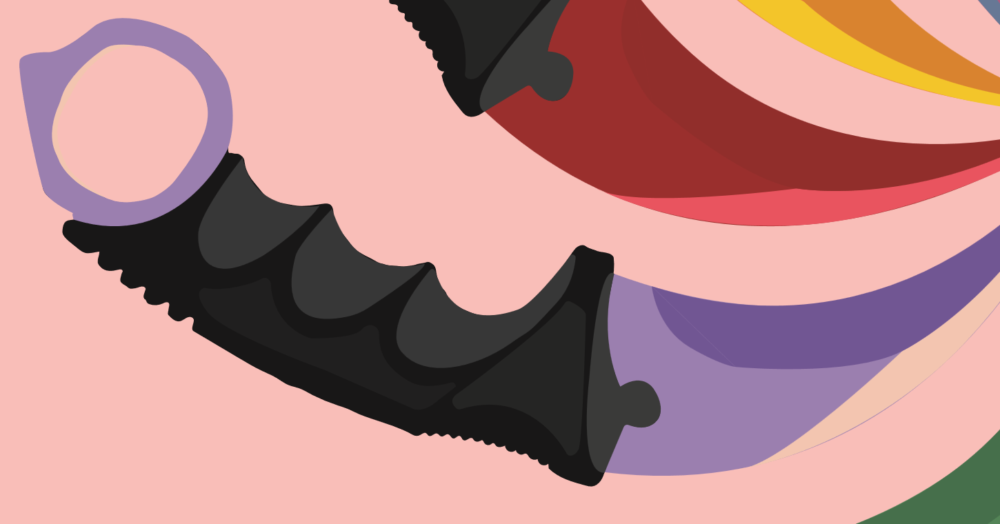

PROJECT_02 // Illustration
Radial Karambit Illustration
A print-ready vector illustration of ten karambit knives spiraling into a single point.
CASE_STUDY.TXT

# overview
This was my self-directed final project for my illustration course, made in Adobe Illustrator. I conceived and designed it as a radial composition of ten karambit knives arranged in a pinwheel, so that every blade spirals into a single center point.
10knives, each with its own color scheme
1shared center point every blade spirals into
11×8.5inches, print-ready
Vectorartwork, sharp at any size
# design decisions
- A pinwheel composition. The ten knives are arranged radially, with every blade spiraling into one center point. The pinwheel gives the piece motion and a clear focal point, and the repetition reads as a single shape.
- One color scheme per blade. Each blade is built from layered tonal bands, so every knife has its own identity while sharing the same underlying structure.
- Matched details. Each grip is textured and each finger ring is colored to match its blade, which ties every knife together as a set.
- Consistency across ten forms. Because the same object is repeated ten times, any difference in detail would stand out, so I kept the level of detail consistent across every knife.

# delivery
I delivered the artwork as a print-ready 11" x 8.5" piece that met the project's print specifications. Because it's vector, it stays sharp at any size.
END TRANSMISSION